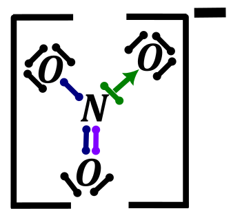
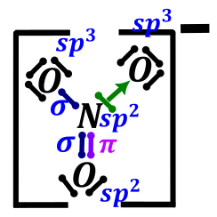
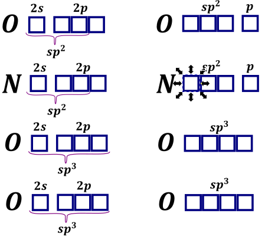
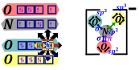
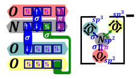
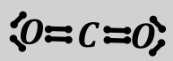
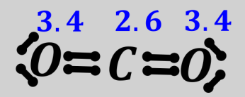
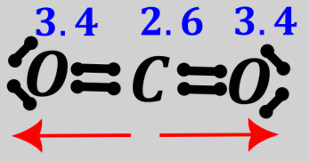
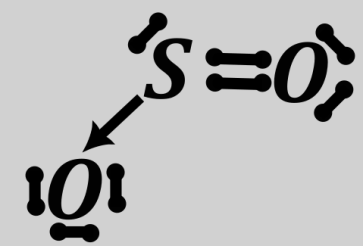
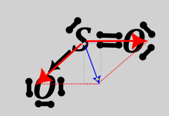

Atomy najpierw ustalają właściwą hybrydyzację dla danego związku i rozmieszczają elektrony na orbitalach hybrydyzowanych, a dopiero potem tworzą wiązania. Można powiedzieć, iż atom sam dobrze wie, jaką cząsteczkę będzie chciał zrobić i jaką hybrydyzację przyjmuje. Należy podkreślić, gdyż jest to często robiony błąd przez uczniów jak i nauczycieli, jak również występuje na starych maturach. Najpierw rozważamy hybrydyzację przedstawioną powyżej metodą, a dopiero potem nakładanie orbitali. Np. w celu ustalenia wiązań występujących w jonie \(NO_{3}^{-}\) najpierw należy ustalić jego wzór Lewisa.

Aby ustalić strukturę elektronową drobiny należy postępować według procedury:
Ustalamy hybrydyzację wszystkich atomów oraz rodzaj wiązań
Dla azotu możemy powiedzieć, iż mamy trzy przyłączone atomy, zero wolnych par elektronowych, czyli suma wynosi trzy. Liczba koordynacyjna trzy oznacza hybrydyzację \(sp^{2}\). Dwa górne atomy tlenu mają po trzy wolne pary i jeden przyłączony atom, a więc liczba koordynacyjna wynosi cztery, co oznacza hybrydyzację \(sp^{3}\). Widzimy dwa wiązania typu prostego sigma (pierwsze wiązanie, które się tworzy) pomiędzy tlenami i azotem – „grantowe”, wiązanie pi typu prostego pomiędzy jednym tlenem i azotem – zielone oraz wiązanie koordynacyjne, w którym atom azotu daje swoje wolne pary elektronowe atomowi tlenu – zielone. Możemy tę wiedzę umieścić na schemacie

Sporządzamy graf hybydyzacji się orbitali atomowych, znając hybrydyzację atomów.
Atomy tlenu o hybrydyzacji \(sp^{3}\) używają orbitalu s i trzech orbitali p do uzyskania hybrydyzacji \(sp^{3}\). Atom azotu oraz dolny atom tlenu uzyskują hybrydyzację \(sp^{2}\), musiały użyć jednego orbitalu s i dwóch orbitali p, więc jeden z orbitali p został o niezmienionej energii

Umieszczenie elektronów
W tak przyrządzonym grafie umieszczam elektrony, dla danych atomów. Należy trzymać się zasady, iż elektrony tworzące wiązanie pi umieszczam w niezhybrydyzowanych orbitalach p, najwygodniej jest rozmieszczać zaczynając właśnie od nich, kolejne w zhybrydyzowanych orbitalach umieszczać wolne pary elektronowe. Atomy tworzące wiązanie proste umieszczam jako elektrony niesparowane w zhybrydyzowanych parach elektronowych. Dobrze jest pokolorować albo ponumerować atomy, w celu nie popełnienia błędu.

Zaznaczenie wiązań
Na przedstawionym grafie należy zaznaczyć, które elektrony tworzą wiązanie. Jednocześnie wiązanie pi może być tworze tylko przez nakładanie się dwóch elektronów z niehybrydyzowanych orbitali p. Wiązanie typu prostego polega ma połączeniu dwóch niesparowanych atomów, koordynacyjne polega na uwspólnieniu wolnej pary elektronowej (dostarczeniu dwóch elektronów) od jednego atomu do drugiego.

Dopiero widząc, jakie mamy wiązania ustalić strukturę przestrzenną związku. Nakładamy orbitale hybrydyzowane, o odpowiedniej hybrydyzacji wynikającej ze narysowanej struktury.
Znając kształt cząsteczki możemy ustalić jej moment dipolowy. Wielkość ta mówi o niesymetrycznym rozłożeniu elektronów w przestrzeni; o występowaniu bieguna dodatniego i ujemnego w cząsteczce. Cząsteczka będąca dipolem ma oczywiście biegun dodatni i ujemny, im większa wartość tego momentu tym większe ładunki są z jednej i drugiej strony cząsteczki. W celu ustalenia momentu dipolowego, znając kształt cząsteczki należy rozważyć polaryzację wiązań. Jeżeli powstałe przesunięcia elektronów w wiązaniach się równoważą w przestrzeni (lub nie ma tych przesunięć, gdyż pierwiastki mają takie same elektroujemności) wówczas momentu dipolowego nie ma. Jeżeli się nie równoważą to moment dipolowy jest. W celu ułatwienia i lepszego zrozumienia o polaryzacji wiązań możemy myśleć jak o siłach i rozważać jak siły. Np. Dla Cząsteczki \(CO_{2}\) ustalamy wzór Lewisa i strukturę cząsteczki, jako

Oczywiście hybrydyzacja atomu węgla to \(sp\) (dwa atomy przyłączone, zero wolnych par elektronowych), więc kształt cząsteczki jest liniowy. Sprawdzamy elektroujemności w układzie okresowym, wynoszą one 3.4 dla tlenu i 2.6 dla węgla. Wiązanie tlen węgiel jest więc spolaryzowane w stronę tlenu.


Można więc powiedzieć, że polaryzacje wiązań się równoważą. Jeżeli jest problem z wyobrażeń sobie tego, można zastosować analogię w którym mamy dwa psy (takie same) i ciągną one swojego właściciela, jeden w jedną stronę drugi w przeciwną stronę. Siły się równoważa, właściciel będzie stał w miejscy. Analogicznie postępując dla \(SO_{2}\) ustalamy wzór Lewisa, kolejno odczytujemy hybrydyzację (\(sp^{2}\) dwa przyłączone atomy i jedna wolna para elektronowa). Oraz kształt cząsteczki (V kształtna, kształt dla liczby przestrzennej równej 3 i jednej wolnej pary elektronowej. Analizując elektroujemności widzimy, iż wiązania cząsteczki są spolaryzowane w stronę tlenów.

Po rozważeniu wypadkowej polaryzacji widać, iż one się nie równoważy, wypadkowa skierowana jest od siarki do przestrzeni między tlenami. Możemy wywnioskować, więc, że moment dipolowy nie jest równy zero, biegun dodatni cząsteczki jest na atomie siarki, a ujemny pomiędzy atomami tlenów.
